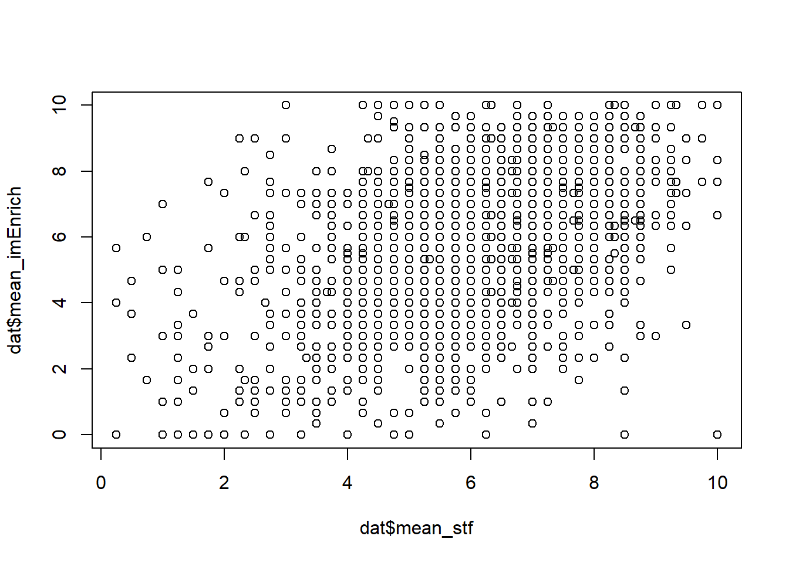
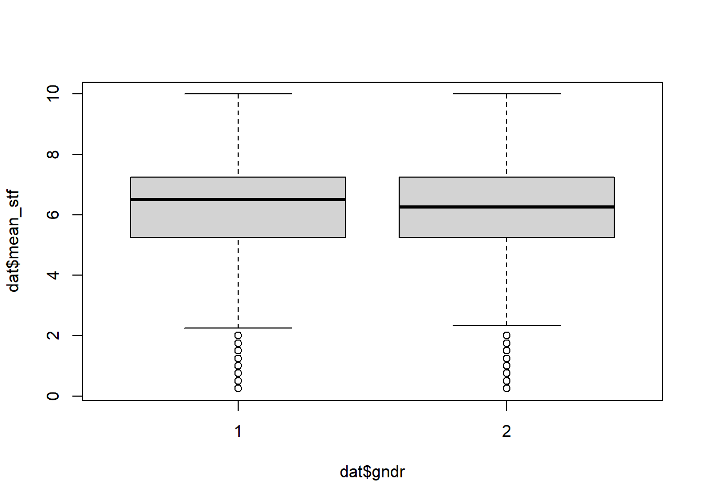

## global variables
cutOff <- 1 # cutoff value for building extreme groupsExemplary data analysis
Background Information
This is an R Markdown document. Instructions for writing these documents and background information can be found in the book written by Xie, Allaire, and Grolemund (2018) When you execute code within the document, the results appear beneath the code.
This file contains the pre-processing step (clean, transform data), whereby the folder “XXX” the analysis step (test hypotheses and exploratory analyses), which follows the classical data-analysis pipeline (see Peng and Matsui 2016; Wickham and Grolemund 2017).
Notes
Remark:
get packages, raw data, functions
### install and load packages
# if packages are not already installed, the function will install and activate them
usePackage <- function(p) {
if (!is.element(p, installed.packages()[,1]))
install.packages(p, dep = TRUE, repos = "http://cran.us.r-project.org")
require(p, character.only = TRUE)
}
usePackage("haven") # load SPSS, ... data
usePackage("tidyverse") # data cleaning and summarizing
usePackage("psych") # psychometric analysis (EFA)
## psychometric analysis
usePackage("moments") # skewness, kurtosis
## outputs
usePackage("stargazer") # create tables
usePackage("report") # get reports of statistical tests in APA7
usePackage("lavaan") # for CFA
rm(usePackage)
### load data files
## change working directory
setwd("data")
## load data
dat <- haven::read_spss(file = "ESS1-9e01_1.sav")
### load functions
# print(getwd())
setwd("../functions")
for(i in 1:length(dir())){
# print(dir()[i])
source(dir()[i], encoding = "utf-8")
}
rm(i)data preperation
compute mean scores
### data preparation
dat$cntry <- NULL
# reverse coded items
dat$imsmetn <- 5 - dat$imsmetn
dat$imdfetn <- 5 - dat$imdfetn
dat$impcntr <- 5 - dat$impcntr
### create mean scores
# !!! normally you would need to run multiple analysis to check if building mean scores make sense (EFAs, ...)
# > Immigration bad or good for country's economy
# > Country's cultural life undermined or enriched by immigrants
# > Immigrants make country worse or better place to live
sel_var <- c("imbgeco", "imueclt", "imwbcnt")
dat$mean_imEnrich <- rowMeans(x = dat[, sel_var], na.rm = TRUE)
# > Allow many/few immigrants of same race/ethnic group as majority
# > Allow many/few immigrants of different race/ethnic group from majority
# > Allow many/few immigrants from poorer countries outside Europe
sel_var <- c("imsmetn", "imdfetn", "impcntr")
dat$mean_imAllow <- rowMeans(x = dat[, sel_var], na.rm = TRUE)
# > Trust
sel_var <- str_detect(string = colnames(dat), pattern = "^trst")
dat$mean_trst <- rowMeans(x = dat[, sel_var], na.rm = TRUE)
# > Satisfaction (personally, government)
sel_var <- str_detect(string = colnames(dat), pattern = "^stf")
dat$mean_stf <- rowMeans(x = dat[, sel_var], na.rm = TRUE)
dat$sd_stf <- dat %>%
select(matches(match = "^stf")) %>%
apply(.,1, sd, na.rm = TRUE)get extreme groups for lrscale variable
Aim to get two extreme groups according to the lrscale (left, right scale) variable:
dat$lrscale_scaled <- scale(x = dat$lrscale, center = TRUE, scale = TRUE)
mean_upper <- mean(dat$lrscale_scaled[dat$lrscale_scaled > cutOff], na.rm = TRUE)
mean_lower <- mean(dat$lrscale_scaled[dat$lrscale_scaled < cutOff * -1], na.rm = TRUE)
hist(dat$lrscale_scaled)
# add vertical line
abline(v=mean_upper, col = "red")
abline(v=mean_lower, col = "red")
# save subsets
dat_upper <-dat %>%
filter(dat$lrscale_scaled > mean_upper)
dat_lower <-dat %>%
filter(dat$lrscale_scaled < mean_lower)
### get dummy
dat$lrscale_dummy <- ifelse(test = dat$lrscale_scaled > mean_upper, yes = 2, no =
ifelse(test = dat$lrscale_scaled < mean_lower, yes = 1, no = 0))
table(dat$lrscale_dummy)
0 1 2
1977 159 125 Introduction
Migration ‘mother of all political problems,’ says German Interior Minister Horst Seehofer. Hort Seehofer’s 2018 statement1 after the protests in Chemnitz, which sees migration at the heart of society’s disillusionment, shows how charged the debate about migration is in Germany.
Background
…
Quoting (please remove this for your report!)
How to cite literature within an markdown document:
- Blah blah (see Newman 2018, 33–35; also Skrondal and Rabe-Hesketh 2004, ch. 1).
- Blah blah (Newman 2018, 33–35).
- Blah blah (Newman 2018; Skrondal and Rabe-Hesketh 2004).
- Rutkowski et al. says blah (2018).
- Newman (2018) says blah.
Methods
Hypothesis
Are different factors relevant to the perceived threat of migrants by people with a high or low left/right orientation?
The following sub-hypothesis could be derived from literature:
…
Results
Descriptive Statisticss
First glimpse at the loaded data:
glimpse(dat)Rows: 2,358
Columns: 41
$ cname <chr> "ESS1-9e01", "ESS1-9e01", "ESS1-9e01", "ESS1-9e01", "ES…
$ cedition <chr> "1.0", "1.0", "1.0", "1.0", "1.0", "1.0", "1.0", "1.0",…
$ cproddat <chr> "10.12.2020", "10.12.2020", "10.12.2020", "10.12.2020",…
$ cseqno <dbl> 101403, 101404, 101405, 101406, 101407, 101408, 101409,…
$ name <chr> "ESS9e03", "ESS9e03", "ESS9e03", "ESS9e03", "ESS9e03", …
$ essround <dbl+lbl> 9, 9, 9, 9, 9, 9, 9, 9, 9, 9, 9, 9, 9, 9, 9, 9, 9, …
$ edition <chr> "3", "3", "3", "3", "3", "3", "3", "3", "3", "3", "3", …
$ idno <dbl> 9, 10, 64, 65, 91, 119, 150, 212, 255, 270, 279, 304, 3…
$ dweight <dbl> 0.9994662, 0.9994662, 0.9994662, 0.9994662, 0.9994662, …
$ pspwght <dbl> 1.2750090, 0.8540229, 0.7596949, 1.0794106, 1.2697877, …
$ pweight <dbl> 3.037345, 3.037345, 3.037345, 3.037345, 3.037345, 3.037…
$ anweight <dbl> 3.872642, 2.593962, 2.307456, 3.278542, 3.856783, 3.872…
$ trstprl <dbl+lbl> 2, 7, 3, 3, 4, 9, 10, 5, 5, 7, NA, 6, 6,…
$ trstlgl <dbl+lbl> 4, 8, 5, 4, 5, 7, 10, 7, 8, 8, 5, 9, 7,…
$ trstplc <dbl+lbl> 5, 8, 6, 4, 7, 7, 10, 7, 9, 8, 7, 9, 7,…
$ trstplt <dbl+lbl> 0, 6, 3, 3, 5, 8, 10, 5, 5, 6, 3, 5, 6,…
$ trstprt <dbl+lbl> 2, 6, 5, 3, 5, 8, 4, 5, 5, 6, 1, 5, 3, 7, 9, 4, 3, …
$ trstep <dbl+lbl> 3, 4, 5, 2, 4, 10, 10, 6, 3, 7, 3, 5, 5,…
$ trstun <dbl+lbl> 0, 5, 6, 2, 5, 10, 10, 6, 7, 7, NA, 7, 5,…
$ lrscale <dbl+lbl> 5, 5, 3, 2, 1, 5, 5, 2, 3, 5, 1, 4, 5, 6, 4, 3, 0, …
$ stflife <dbl+lbl> 10, 8, 8, 6, 9, 9, 10, 8, 4, 9, 10, 9, 9,…
$ stfeco <dbl+lbl> 10, 8, 5, 6, 9, 8, 10, 8, 5, 9, 7, 9, 9,…
$ stfgov <dbl+lbl> 7, 5, 6, 2, 5, NA, 5, 7, 4, 6, NA, 6, 8,…
$ stfdem <dbl+lbl> 7, 9, 6, 4, 5, 10, 10, 7, 6, 9, NA, 5, 9,…
$ imsmetn <dbl> 4, 4, 4, 3, 4, 3, 3, 4, 4, 4, 2, 3, 4, 3, 3, 4, 4, 3, 4…
$ imdfetn <dbl> 4, 4, 4, 3, NA, 3, 3, 4, 3, 3, 2, 3, 3, 3, 3, NA, NA, 3…
$ impcntr <dbl> 4, 4, 4, 3, NA, 4, 2, 4, NA, 2, 2, 2, 3, 3, 3, 3, NA, 1…
$ imbgeco <dbl+lbl> NA, 10, 9, 4, 8, 8, 10, 8, 7, 7, 0, 9, 10,…
$ imueclt <dbl+lbl> 8, 5, 8, 4, 8, 8, 10, 8, 7, 4, 0, 9, 10,…
$ imwbcnt <dbl+lbl> 5, 5, 8, 3, 8, 7, 6, 8, 7, 5, 0, 5, 5, 5, 5, 7, 4, …
$ happy <dbl+lbl> 10, 8, 10, 6, 9, 9, 9, 8, 5, 9, 10, 9, 8,…
$ rlgdgr <dbl+lbl> 9, 7, 9, 1, 5, 9, 5, 0, 3, 9, 5, 0, 10,…
$ gndr <dbl+lbl> 2, 2, 2, 1, 2, 2, 2, 1, 1, 1, 2, 2, 1, 1, 1, 2, 2, …
$ agea <dbl+lbl> 26, 65, 74, 64, 54, 20, 71, 41, 62, 65, 67, 47, 67,…
$ mean_imEnrich <dbl> 6.500000, 6.666667, 8.333333, 3.666667, 8.000000, 7.666…
$ mean_imAllow <dbl> 4.000000, 4.000000, 4.000000, 3.000000, 4.000000, 3.333…
$ mean_trst <dbl> 2.285714, 6.285714, 4.714286, 3.000000, 5.000000, 8.428…
$ mean_stf <dbl> 8.50, 7.50, 6.25, 4.50, 7.00, 9.00, 8.75, 7.50, 4.75, 8…
$ sd_stf <dbl> 1.7320508, 1.7320508, 1.2583057, 1.9148542, 2.3094011, …
$ lrscale_scaled <dbl[,1]> <matrix[26 x 1]>
$ lrscale_dummy <dbl[,1]> <matrix[26 x 1]>summary(dat) cname cedition cproddat cseqno
Length:2358 Length:2358 Length:2358 Min. :101403
Class :character Class :character Class :character 1st Qu.:101992
Mode :character Mode :character Mode :character Median :102582
Mean :102582
3rd Qu.:103171
Max. :103760
name essround edition idno
Length:2358 Min. :9 Length:2358 Min. : 9
Class :character 1st Qu.:9 Class :character 1st Qu.:17194
Mode :character Median :9 Mode :character Median :34640
Mean :9 Mean :34894
3rd Qu.:9 3rd Qu.:52408
Max. :9 Max. :69956
dweight pspwght pweight anweight
Min. :0.9995 Min. :0.4300 Min. :3.037 Min. : 1.306
1st Qu.:0.9995 1st Qu.:0.7410 1st Qu.:3.037 1st Qu.: 2.251
Median :0.9995 Median :0.9423 Median :3.037 Median : 2.862
Mean :1.0000 Mean :1.0000 Mean :3.037 Mean : 3.037
3rd Qu.:0.9995 3rd Qu.:1.1026 3rd Qu.:3.037 3rd Qu.: 3.349
Max. :1.6288 Max. :3.7891 Max. :3.037 Max. :11.509
trstprl trstlgl trstplc trstplt
Min. : 0.000 Min. : 0.000 Min. : 0.000 Min. : 0.000
1st Qu.: 3.000 1st Qu.: 5.000 1st Qu.: 6.000 1st Qu.: 2.000
Median : 5.000 Median : 7.000 Median : 8.000 Median : 4.000
Mean : 5.099 Mean : 6.128 Mean : 7.103 Mean : 3.964
3rd Qu.: 7.000 3rd Qu.: 8.000 3rd Qu.: 9.000 3rd Qu.: 6.000
Max. :10.000 Max. :10.000 Max. :10.000 Max. :10.000
NA's :31 NA's :21 NA's :5 NA's :19
trstprt trstep trstun lrscale
Min. : 0.000 Min. : 0.000 Min. : 0.000 Min. : 0.000
1st Qu.: 2.000 1st Qu.: 3.000 1st Qu.: 3.000 1st Qu.: 3.000
Median : 4.000 Median : 5.000 Median : 5.000 Median : 5.000
Mean : 3.993 Mean : 4.562 Mean : 4.903 Mean : 4.388
3rd Qu.: 5.000 3rd Qu.: 6.000 3rd Qu.: 7.000 3rd Qu.: 5.000
Max. :10.000 Max. :10.000 Max. :10.000 Max. :10.000
NA's :22 NA's :81 NA's :104 NA's :97
stflife stfeco stfgov stfdem
Min. : 0.000 Min. : 0.000 Min. : 0.00 Min. : 0.000
1st Qu.: 7.000 1st Qu.: 5.000 1st Qu.: 3.00 1st Qu.: 4.000
Median : 8.000 Median : 7.000 Median : 4.00 Median : 6.000
Mean : 7.664 Mean : 6.769 Mean : 4.28 Mean : 5.887
3rd Qu.: 9.000 3rd Qu.: 8.000 3rd Qu.: 6.00 3rd Qu.: 8.000
Max. :10.000 Max. :10.000 Max. :10.00 Max. :10.000
NA's :6 NA's :36 NA's :66 NA's :37
imsmetn imdfetn impcntr imbgeco
Min. :1.000 Min. :1.000 Min. :1.000 Min. : 0.000
1st Qu.:3.000 1st Qu.:2.000 1st Qu.:2.000 1st Qu.: 5.000
Median :3.000 Median :3.000 Median :3.000 Median : 6.000
Mean :3.335 Mean :2.918 Mean :2.835 Mean : 6.125
3rd Qu.:4.000 3rd Qu.:3.000 3rd Qu.:3.000 3rd Qu.: 8.000
Max. :4.000 Max. :4.000 Max. :4.000 Max. :10.000
NA's :27 NA's :30 NA's :30 NA's :33
imueclt imwbcnt happy rlgdgr
Min. : 0.000 Min. : 0.000 Min. : 0.000 Min. : 0.000
1st Qu.: 5.000 1st Qu.: 4.000 1st Qu.: 7.000 1st Qu.: 1.000
Median : 6.000 Median : 5.000 Median : 8.000 Median : 5.000
Mean : 6.023 Mean : 5.347 Mean : 7.818 Mean : 4.164
3rd Qu.: 8.000 3rd Qu.: 7.000 3rd Qu.: 9.000 3rd Qu.: 7.000
Max. :10.000 Max. :10.000 Max. :10.000 Max. :10.000
NA's :19 NA's :29 NA's :3 NA's :7
gndr agea mean_imEnrich mean_imAllow
Min. :1.000 Min. :15.00 Min. : 0.000 Min. :1.000
1st Qu.:1.000 1st Qu.:34.00 1st Qu.: 4.667 1st Qu.:2.667
Median :1.000 Median :51.00 Median : 6.000 Median :3.000
Mean :1.486 Mean :49.65 Mean : 5.834 Mean :3.031
3rd Qu.:2.000 3rd Qu.:64.00 3rd Qu.: 7.333 3rd Qu.:3.333
Max. :2.000 Max. :90.00 Max. :10.000 Max. :4.000
NA's :4 NA's :9 NA's :15
mean_trst mean_stf sd_stf lrscale_scaled.V1
Min. : 0.000 Min. : 0.250 Min. :0.000 Min. :-2.30234
1st Qu.: 3.857 1st Qu.: 5.250 1st Qu.:1.258 1st Qu.:-0.72823
Median : 5.286 Median : 6.250 Median :1.893 Median : 0.32118
Mean : 5.116 Mean : 6.163 Mean :1.982 Mean : 0.00000
3rd Qu.: 6.571 3rd Qu.: 7.250 3rd Qu.:2.630 3rd Qu.: 0.32118
Max. :10.000 Max. :10.000 Max. :6.364 Max. : 2.94470
NA's :2 NA's :1 NA's :9 NA's :97
lrscale_dummy.V1
Min. :0.00000
1st Qu.:0.00000
Median :0.00000
Mean :0.18089
3rd Qu.:0.00000
Max. :2.00000
NA's :97 Basic Inferential Statisticss
Combining statistical tests like cor.test or t.test with the respective plot, check the assumptions of every test procedure you are using:
cor.test(dat$mean_stf, dat$mean_imEnrich, use = "complete")
Pearson's product-moment correlation
data: dat$mean_stf and dat$mean_imEnrich
t = 21.905, df = 2346, p-value < 2.2e-16
alternative hypothesis: true correlation is not equal to 0
95 percent confidence interval:
0.3779243 0.4451088
sample estimates:
cor
0.4120765 report::report(cor.test(dat$mean_stf, dat$mean_imEnrich, use = "complete"))Effect sizes were labelled following Funder's (2019) recommendations.
The Pearson's product-moment correlation between dat$mean_stf and
dat$mean_imEnrich is positive, statistically significant, and very large (r =
0.41, 95% CI [0.38, 0.45], t(2346) = 21.91, p < .001)plot(dat$mean_stf, dat$mean_imEnrich)
t.test(dat$mean_stf ~ dat$gndr)
Welch Two Sample t-test
data: dat$mean_stf by dat$gndr
t = 1.8892, df = 2349.3, p-value = 0.05899
alternative hypothesis: true difference in means between group 1 and group 2 is not equal to 0
95 percent confidence interval:
-0.004760463 0.255262839
sample estimates:
mean in group 1 mean in group 2
6.223941 6.098690 report::report(t.test(dat$mean_stf ~ dat$gndr))Effect sizes were labelled following Cohen's (1988) recommendations.
The Welch Two Sample t-test testing the difference of dat$mean_stf by dat$gndr
(mean in group 1 = 6.22, mean in group 2 = 6.10) suggests that the effect is
positive, statistically not significant, and very small (difference = 0.13, 95%
CI [-4.76e-03, 0.26], t(2349.27) = 1.89, p = 0.059; Cohen's d = 0.08, 95% CI
[-2.96e-03, 0.16])boxplot(dat$mean_stf ~ dat$gndr)
analyses of extreme groups for lrscale variable
Descriptive Statisticss
tmp_desc <- dat %>%
group_by(lrscale_dummy) %>%
summarise(N = n(),
meanEnrich = mean(mean_imEnrich, na.rm = TRUE),
sdEnrich = sd(mean_imEnrich, na.rm = TRUE),
meanAllow = mean(mean_imAllow, na.rm = TRUE),
sdAllow = sd(mean_imAllow, na.rm = TRUE),
meanStf = mean(mean_stf, na.rm = TRUE),
sdStf = sd(mean_stf, na.rm = TRUE),
meanTrst = mean(mean_trst, na.rm = TRUE),
sdTrst = sd(mean_trst, na.rm = TRUE))
tmp_desc <- round(x = tmp_desc, digits = 2)
tmp_desc# A tibble: 4 × 10
lrscale_dummy[,1] N meanEnrich sdEnrich meanAllow sdAllow meanStf sdStf
<dbl> <dbl> <dbl> <dbl> <dbl> <dbl> <dbl> <dbl>
1 0 1977 5.9 1.99 3.04 0.64 6.2 1.55
2 1 159 6.34 2.06 3.24 0.69 5.9 1.67
3 2 125 4.72 2.57 2.73 0.65 6.1 1.82
4 NA 97 5.11 2.42 2.87 0.78 5.91 2.32
# ℹ 2 more variables: meanTrst <dbl>, sdTrst <dbl>Using the stargazer package you can create nice tables. You sometimes need to limit the number of digits using the function round():
### set up summary dataset yourself
stargazer(tmp_desc, type = "html", summary = FALSE)| lrscale_dummy | N | meanEnrich | sdEnrich | meanAllow | sdAllow | meanStf | sdStf | meanTrst | sdTrst | |
| 1 | 0 | 1977 | 5.9 | 1.99 | 3.04 | 0.64 | 6.2 | 1.55 | 5.18 | 1.76 |
| 2 | 1 | 159 | 6.34 | 2.06 | 3.24 | 0.69 | 5.9 | 1.67 | 4.86 | 1.94 |
| 3 | 2 | 125 | 4.72 | 2.57 | 2.73 | 0.65 | 6.1 | 1.82 | 4.72 | 2.04 |
| 4 | NA | 97 | 5.11 | 2.42 | 2.87 | 0.78 | 5.91 | 2.32 | 4.65 | 2.25 |
### using summary function within stargazer
tmp_desc_stargazeer <- as.data.frame(dat[, str_subset(string = colnames(dat), pattern = "mean_")])
tmp_desc_stargazeer <- na.omit(tmp_desc_stargazeer)
stargazer(x =tmp_desc_stargazeer, type = "html", summary = TRUE, digits = 2)| Statistic | N | Mean | St. Dev. | Min | Max |
| mean_imEnrich | 2,335 | 5.84 | 2.07 | 0.00 | 10.00 |
| mean_imAllow | 2,335 | 3.03 | 0.66 | 1.00 | 4.00 |
| mean_trst | 2,335 | 5.12 | 1.81 | 0.00 | 10.00 |
| mean_stf | 2,335 | 6.17 | 1.60 | 0.25 | 10.00 |
#> output to html
setwd("outputs")
stargazer(tmp_desc, type = "html", summary = FALSE, out = "summaryTable.html")| lrscale_dummy | N | meanEnrich | sdEnrich | meanAllow | sdAllow | meanStf | sdStf | meanTrst | sdTrst | |
| 1 | 0 | 1977 | 5.9 | 1.99 | 3.04 | 0.64 | 6.2 | 1.55 | 5.18 | 1.76 |
| 2 | 1 | 159 | 6.34 | 2.06 | 3.24 | 0.69 | 5.9 | 1.67 | 4.86 | 1.94 |
| 3 | 2 | 125 | 4.72 | 2.57 | 2.73 | 0.65 | 6.1 | 1.82 | 4.72 | 2.04 |
| 4 | NA | 97 | 5.11 | 2.42 | 2.87 | 0.78 | 5.91 | 2.32 | 4.65 | 2.25 |
Basic Inferential Statisticss
lm_lower <- lm(formula = mean_imEnrich ~ mean_trst + mean_stf + happy + agea + gndr, data = dat_lower)
lm_upper <- lm(formula = mean_imEnrich ~ mean_trst + mean_stf + happy + agea + gndr, data = dat_upper)
summary(lm_lower)
Call:
lm(formula = mean_imEnrich ~ mean_trst + mean_stf + happy + agea +
gndr, data = dat_lower)
Residuals:
Min 1Q Median 3Q Max
-5.3869 -1.0797 0.0966 1.1228 4.0886
Coefficients:
Estimate Std. Error t value Pr(>|t|)
(Intercept) 5.172446 0.911014 5.678 6.73e-08 ***
mean_trst 0.451803 0.102439 4.410 1.94e-05 ***
mean_stf -0.182405 0.131175 -1.391 0.166
happy 0.105915 0.094284 1.123 0.263
agea -0.001638 0.007501 -0.218 0.827
gndr -0.451923 0.321711 -1.405 0.162
---
Signif. codes: 0 '***' 0.001 '**' 0.01 '*' 0.05 '.' 0.1 ' ' 1
Residual standard error: 1.939 on 152 degrees of freedom
(1 Beobachtung als fehlend gelöscht)
Multiple R-squared: 0.1389, Adjusted R-squared: 0.1106
F-statistic: 4.905 on 5 and 152 DF, p-value: 0.0003442summary(lm_upper)
Call:
lm(formula = mean_imEnrich ~ mean_trst + mean_stf + happy + agea +
gndr, data = dat_upper)
Residuals:
Min 1Q Median 3Q Max
-4.7007 -1.6438 0.1496 1.4679 6.7869
Coefficients:
Estimate Std. Error t value Pr(>|t|)
(Intercept) -1.28886 1.13532 -1.135 0.25856
mean_trst 0.28955 0.13520 2.142 0.03427 *
mean_stf 0.53544 0.16619 3.222 0.00164 **
happy -0.00867 0.10892 -0.080 0.93669
agea 0.01027 0.01021 1.007 0.31620
gndr 0.61951 0.38910 1.592 0.11400
---
Signif. codes: 0 '***' 0.001 '**' 0.01 '*' 0.05 '.' 0.1 ' ' 1
Residual standard error: 2.122 on 119 degrees of freedom
Multiple R-squared: 0.3445, Adjusted R-squared: 0.317
F-statistic: 12.51 on 5 and 119 DF, p-value: 9.165e-10Again we can use the stargazer package, which identifies lm_upper for example as an lm-object in R and creates a wonderful table for the model results:
stargazer(lm_lower, type = "html")| Dependent variable: | |
| mean_imEnrich | |
| mean_trst | 0.452*** |
| (0.102) | |
| mean_stf | -0.182 |
| (0.131) | |
| happy | 0.106 |
| (0.094) | |
| agea | -0.002 |
| (0.008) | |
| gndr | -0.452 |
| (0.322) | |
| Constant | 5.172*** |
| (0.911) | |
| Observations | 158 |
| R2 | 0.139 |
| Adjusted R2 | 0.111 |
| Residual Std. Error | 1.939 (df = 152) |
| F Statistic | 4.905*** (df = 5; 152) |
| Note: | p<0.1; p<0.05; p<0.01 |
stargazer(lm_upper, type = "html")| Dependent variable: | |
| mean_imEnrich | |
| mean_trst | 0.290** |
| (0.135) | |
| mean_stf | 0.535*** |
| (0.166) | |
| happy | -0.009 |
| (0.109) | |
| agea | 0.010 |
| (0.010) | |
| gndr | 0.620 |
| (0.389) | |
| Constant | -1.289 |
| (1.135) | |
| Observations | 125 |
| R2 | 0.345 |
| Adjusted R2 | 0.317 |
| Residual Std. Error | 2.122 (df = 119) |
| F Statistic | 12.511*** (df = 5; 119) |
| Note: | p<0.1; p<0.05; p<0.01 |
Appendix
Test for unidimensionality, CFA
Here we could apply a self-written function for example to check the reliability and amount of explained variance for the first factor:
get correlation plot, descriptive plot, EFA, CFA
regEx <- "^trst"
nameScale <- "Trust Scale"
nameVariable <- "mean_TrustItems"
sum(str_detect(string = colnames(dat), pattern = regEx))[1] 7tmp_dat <- na.omit(dat[,str_detect(string = colnames(dat), pattern = regEx)])
tmp <- CFAstats(dataset = tmp_dat, regularExp = regEx, labelLatent = str_remove(string = nameVariable, pattern = "mean_"),
showPlots = TRUE,
computeEFA = TRUE,
computeCFA = TRUE,
computeCFAMplus = FALSE)

descriptive statistics:
Mean SD Median CoeffofVariation Minimum Maximun Lower Quantile
trstprl 5.13 2.47 5 0.48 0 10 0
trstlgl 6.16 2.48 7 0.40 0 10 0
trstplc 7.10 2.14 8 0.30 0 10 0
trstplt 3.97 2.25 4 0.57 0 10 0
trstprt 4.02 2.13 4 0.53 0 10 0
trstep 4.58 2.39 5 0.52 0 10 0
trstun 4.91 2.35 5 0.48 0 10 0
Upper Quantile Skewness Kurtosis(-3) KS-Test
trstprl 10 -0.25 -0.57 0
trstlgl 10 -0.58 -0.33 0
trstplc 10 -1.02 0.91 0
trstplt 10 -0.05 -0.60 0
trstprt 10 -0.05 -0.50 0
trstep 10 -0.18 -0.55 0
trstun 10 -0.25 -0.44 0
variables under investigation: trstprl trstlgl trstplc trstplt trstprt trstep trstun
Cronbachs Alpha: 0.89
Error in polychoric(x, correct = correct) :
You have more than8 categories for your items, polychoric is probably not needed
[1] "use instead of polychoric correlations pearson correlations"
Parallel analysis suggests that the number of factors = 3 and the number of components = 1
TrustItems
Number of components: 1
Error in polychoric(tmp_dat) :
You have more than8 categories for your items, polychoric is probably not needed
[1] "use instead of polychoric correlations pearson correlations"
EFA factor loadings (1 factor solution):
Loadings:
MR1
trstprl 0.806
trstlgl 0.678
trstplc 0.495
trstplt 0.850
trstprt 0.838
trstep 0.802
trstun 0.685
MR1
SS loadings 3.892
Proportion Var 0.556
CFA summary and fit statistics:
lavaan 0.6.17 ended normally after 28 iterations
Estimator ML
Optimization method NLMINB
Number of model parameters 14
Number of observations 2202
Model Test User Model:
Standard Scaled
Test Statistic 964.099 547.943
Degrees of freedom 14 14
P-value (Chi-square) 0.000 0.000
Scaling correction factor 1.759
Yuan-Bentler correction (Mplus variant)
Model Test Baseline Model:
Test statistic 9130.044 5090.118
Degrees of freedom 21 21
P-value 0.000 0.000
Scaling correction factor 1.794
User Model versus Baseline Model:
Comparative Fit Index (CFI) 0.896 0.895
Tucker-Lewis Index (TLI) 0.844 0.842
Robust Comparative Fit Index (CFI) 0.897
Robust Tucker-Lewis Index (TLI) 0.845
Loglikelihood and Information Criteria:
Loglikelihood user model (H0) -30701.274 -30701.274
Scaling correction factor 1.357
for the MLR correction
Loglikelihood unrestricted model (H1) NA NA
Scaling correction factor 1.558
for the MLR correction
Akaike (AIC) 61430.547 61430.547
Bayesian (BIC) 61510.307 61510.307
Sample-size adjusted Bayesian (SABIC) 61465.827 61465.827
Root Mean Square Error of Approximation:
RMSEA 0.176 0.132
90 Percent confidence interval - lower 0.166 0.125
90 Percent confidence interval - upper 0.185 0.139
P-value H_0: RMSEA <= 0.050 0.000 0.000
P-value H_0: RMSEA >= 0.080 1.000 1.000
Robust RMSEA 0.175
90 Percent confidence interval - lower 0.162
90 Percent confidence interval - upper 0.187
P-value H_0: Robust RMSEA <= 0.050 0.000
P-value H_0: Robust RMSEA >= 0.080 1.000
Standardized Root Mean Square Residual:
SRMR 0.067 0.067
Parameter Estimates:
Standard errors Sandwich
Information bread Observed
Observed information based on Hessian
Latent Variables:
Estimate Std.Err z-value P(>|z|) Std.lv Std.all
TrustItems =~
trstprl 1.000 1.978 0.801
trstlgl 0.798 0.025 31.815 0.000 1.578 0.638
trstplc 0.501 0.027 18.834 0.000 0.991 0.462
trstplt 0.997 0.021 47.008 0.000 1.972 0.877
trstprt 0.933 0.022 42.309 0.000 1.846 0.868
trstep 0.957 0.023 41.358 0.000 1.893 0.793
trstun 0.800 0.025 31.400 0.000 1.582 0.673
Variances:
Estimate Std.Err z-value P(>|z|) Std.lv Std.all
.trstprl 2.193 0.113 19.485 0.000 2.193 0.359
.trstlgl 3.633 0.127 28.590 0.000 3.633 0.593
.trstplc 3.615 0.131 27.681 0.000 3.615 0.786
.trstplt 1.163 0.077 15.008 0.000 1.163 0.230
.trstprt 1.118 0.071 15.803 0.000 1.118 0.247
.trstep 2.119 0.102 20.683 0.000 2.119 0.371
.trstun 3.029 0.119 25.373 0.000 3.029 0.548
TrustItems 3.914 0.168 23.347 0.000 1.000 1.000
CFA first 6 Modification Indices:
lhs op rhs mi epc sepc.lv sepc.all sepc.nox
22 trstlgl ~~ trstplc 438.788 1.692 1.692 0.467 0.467
36 trstep ~~ trstun 271.209 1.023 1.023 0.404 0.404
31 trstplt ~~ trstprt 259.067 0.703 0.703 0.616 0.616
16 trstprl ~~ trstlgl 70.977 0.580 0.580 0.206 0.206
33 trstplt ~~ trstun 59.919 -0.404 -0.404 -0.215 -0.215
32 trstplt ~~ trstep 55.450 -0.366 -0.366 -0.233 -0.233Save final files
setwd("outputs")
## save as .xlsx file
xlsx::write.xlsx2(x = dat, file = "dat.xlsx")
## save as .csv file
write.csv2(x = dat, file = "dat.csv")
## save as R object
saveRDS(dat, file = "dat.rds")References
Newman, Mark. 2018. Networks: An Introduction. Oxford University Press.
Peng, Roger D., and Elizabeth Matsui. 2016. The Art of Data Science: A Guide for Anyone Who Works with Data. Lulu.com. https://bookdown.org/rdpeng/artofdatascience/.
Skrondal, Anders, and Sophia Rabe-Hesketh. 2004. Generalized Latent Variable Modeling: Multilevel, Longitudinal, and Structural Equation Models. New York: Chapman; Hall/CRC. https://doi.org/10.1201/9780203489437.
Wickham, Hadley, and Garrett Grolemund. 2017. R for Data Science: Import, Tidy, Transform, Visualize, and Model Data. "O’Reilly Media, Inc.". https://r4ds.had.co.nz/.
Xie, Yihui, J. J. Allaire, and Garrett Grolemund. 2018. R Markdown: The Definitive Guide. New York: Chapman; Hall/CRC. https://doi.org/10.1201/9781138359444.
Footnotes
see https://www.dw.com/en/migration-mother-of-all-political-problems-says-german-interior-minister-horst-seehofer/a-45378092, retrieved 9 February 2022↩︎